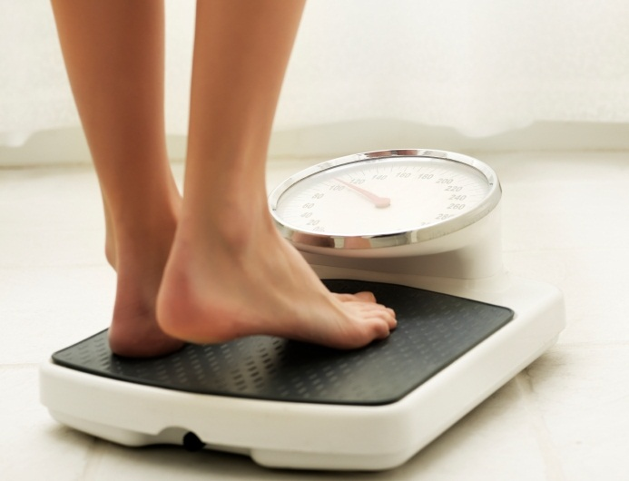

Why You Need Enough Rest
Sleep is more important than you think.
Always set aside time to let your body rest no matter how busy your schedule is.
- Reduces chance of getting sick
- Helps maintain a healthy weight
- More able to think clearly
- Lowers risk of major health problems
| How Much Sleep You Need |
| New Born: 14-17 hours |
| Infant: 12-15 hours |
| Toddler: 11-14 hours |
| Preschool: 10-13 hours |
| School Age: 9-11 hours |
| Teenager: 8-10 hours |
| Young Adult: 7-9 hours |
| Adult: 7-9 hours |
| Older Adult: 7-8 hours |
